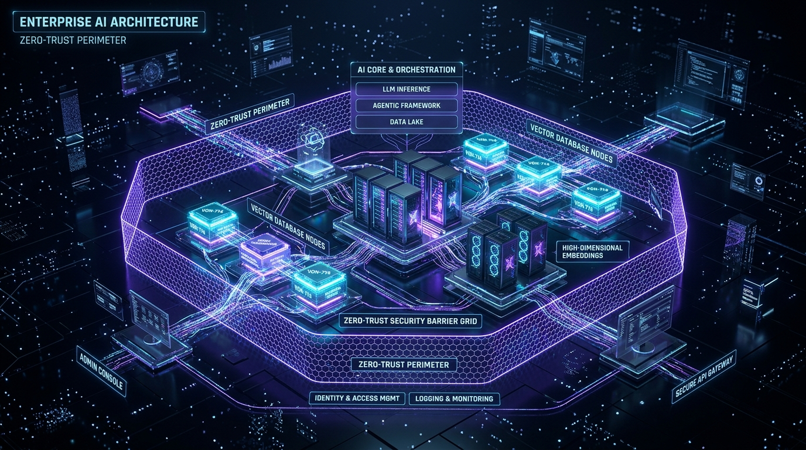

Integrating modern Generative AI, Retrieval-Augmented Generation (RAG), and Autonomous Agent networks into established corporate IT infrastructure without disrupting legacy databases, security perimeters, or compliance protocols.

Implementing an inline security gateway between enterprise users, application layers, and external LLM endpoints. Enforces automatic PII redaction, prompt injection defense, and granular token audit logging (utilizing the ATL Trust proxy model).
Connecting traditional SQL databases (PostgreSQL, Oracle, SQL Server) and NoSQL clusters to vector indexing engines (Qdrant, Pinecone, pgvector) with real-time CDC (Change Data Capture) pipelines.
Structuring multi-stage retrieval pipelines combining BM25 keyword search, dense vector embeddings, cross-encoder re-ranking, and dynamic context trimming for sub-500ms latency.
Drastically reducing inference cost and API latency by routing similar prompts through Redis vector caching, local Ollama/vLLM fallbacks, and intelligent prompt compressions.
Exposing AI capabilities as secure REST/gRPC microservices with rate limiting, load balancing, model failover routing, and complete Prometheus telemetry.
Gene Da Rocha brings senior architectural leadership across cloud-native microservices, enterprise security compliance, and state-of-the-art LLM pipeline design.